肤色与妆面
异国剑士 p07 头发贴图
约 16 分 24 秒，没有章节。标题栏是 VRoid Studio 1.22.1，工程璃山绫.vroid，旁边写着汉化作者宵夜97。头发组从开头就是一串手绘组。贴图不在 VRoid 的笔刷里画：导入一张 UV 棋盘格对位置，立绘的后发从 Photoshop 导出，在 PaintTool SAI 里用扭曲铺进色块。链接的文件是 LinkTexture 下的 1.png。大约 6 分钟之后字幕改成倍速，手法还是同一套。
立绘留在旁边看形状
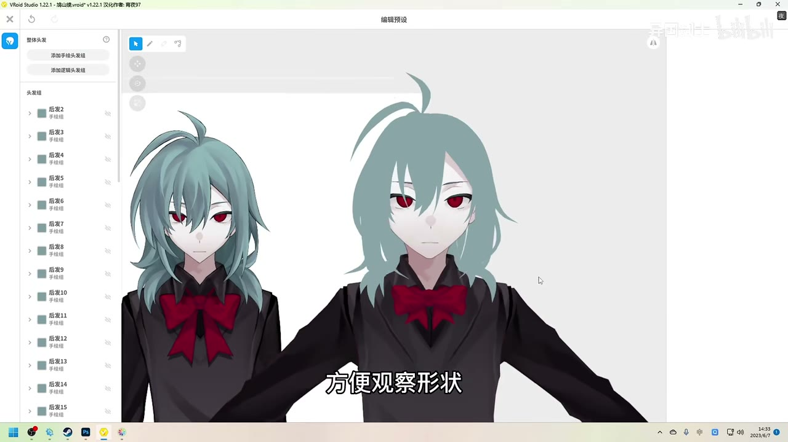
左边那张是 OC 立绘，头发一缕一缕，右边模型还是一整片光滑的灰绿发，两边都是红眼、黑制服、红领结。立绘贴在视口里，用来对形状，这一集没有去点添加手绘头发组或添加逻辑头发组。字幕接着说接下来就可以开始画头发贴图。
先删材质，再命名成后发2
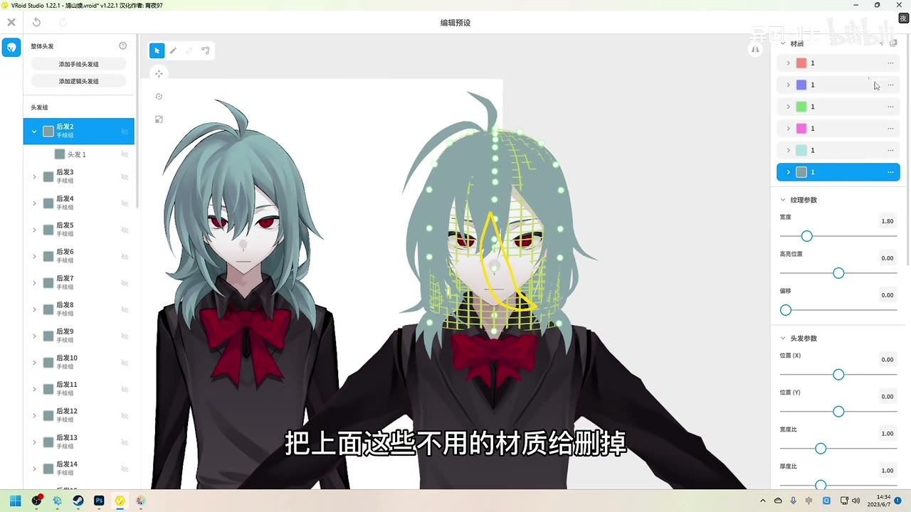
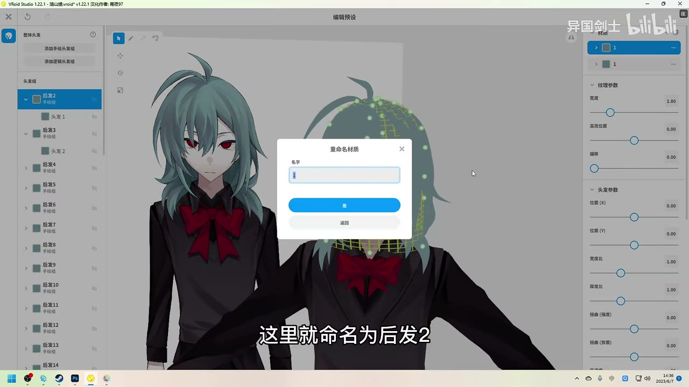
点开后发2，脸上已经铺着绿色发网。右侧那一排彩色材质是以前留下的。字幕要先删掉不用的。删到还剩两格时，字幕说所以就没有办法删除，画面上是一格粉色和一格灰色。接着字幕说我这里直接把这个复制了，不是再去按添加手绘头发组。后发2 到后发15 从第一帧就在列表里。材质对话框把名字写成后发2。这一帧纹理参数还是默认：宽度 1.80，高亮位置 0.00，偏移 0.00，三格都没勾。头发参数里位置都是 0.00，宽度比和厚度比都是 1.00，两条扭曲都是 0.00，平滑度 20。
导入 UV 棋盘格，看这一束落在哪
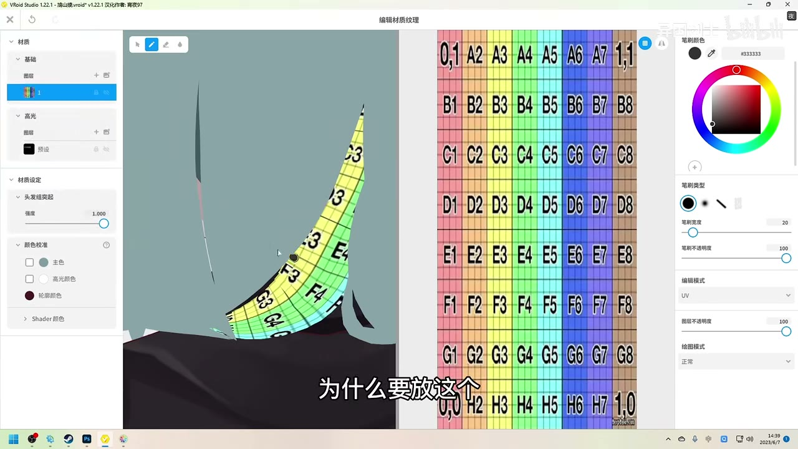
进编辑材质纹理。字幕先说这里先把图层名称给改一下，右键菜单里能看见重命名，还有切换可见、切换 Alpha 锁定、复制、删除、导入、导出、上移、下移。接着字幕说然后我们导入这个 UV 棋盘格。导进去之后，后脑一根发束上是弯过去的色块，右边是摊平的同一张表。色块能对上，就知道这束头发吃的是哪几格。字幕说能很清晰地看到自己画的贴图的图案。主色和高亮颜色都没勾，轮廓颜色是一颗暗红色块，这一下没有去点。Shader 颜色折着。头发组突起的强度是 1.000。笔刷颜色停在 #333333，笔刷宽度 20，不透明度 100，编辑模式是 UV，绘图模式是正常。后面的发丝不靠这支笔。
棋盘格的原件在 SAI 里开着，标签是 uv棋盘格.png。弯在头发上的格子和摊平的表对不齐，字幕说其实跟这里的有一些差异。竖着读的时候，一列格子在这束上是斜着走的。
宽度先收到能看清，再拧高亮和偏移
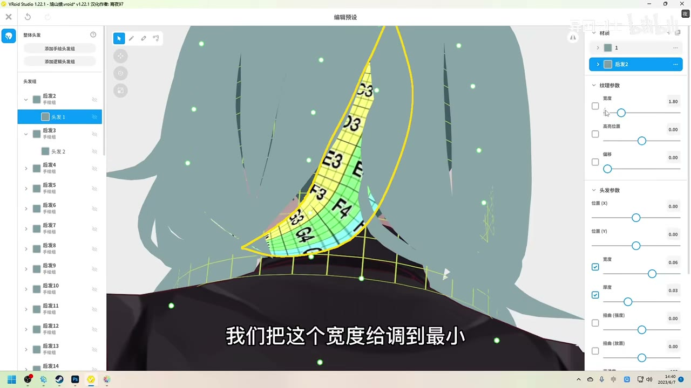
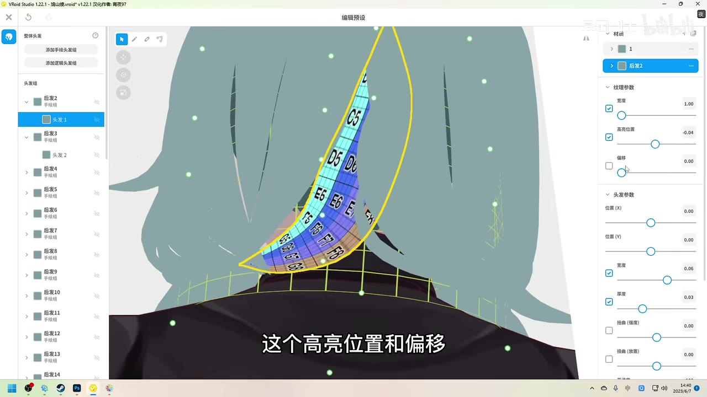
回到头发编辑器，选中后发2 里的头发1。字幕说把宽度调到最小，这一帧头发参数的宽度是 0.06、厚度是 0.03，都勾着，色块才缩成一根带子，格子能读。纹理参数的宽度这时还是 1.80，而且没勾，光标停在它左边的勾上。十秒后这格变成勾着的 1.00，高亮位置勾着并停在 -0.04，色块在这束上挪了一截，从黄绿变成蓝紫。偏移还是 0.00、没勾。字幕说大致是这样子的结构，指的就是这根带子上的格子走向。正面看过去，刘海上也是同一张黄网格，不要把它当成脸的贴图。
后发从立绘里导出成透明底
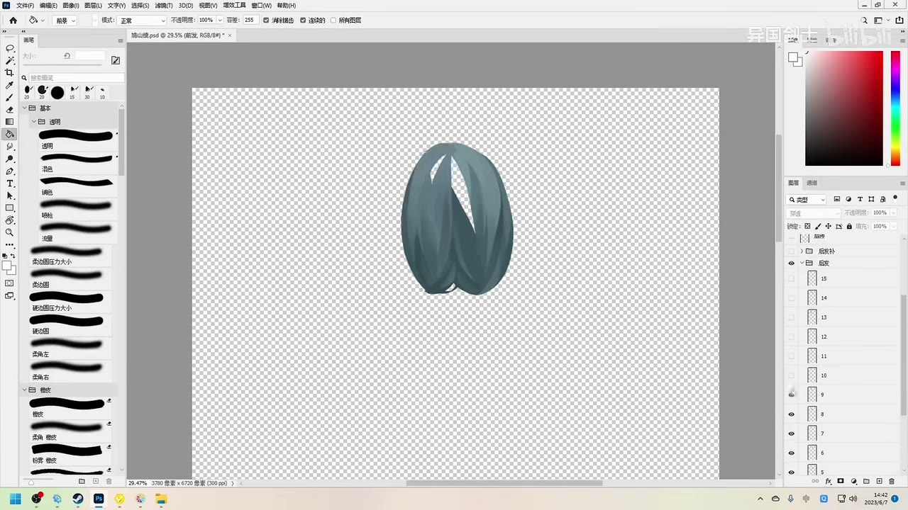
切到立绘。字幕说找到想要的图层，把它给单独导出成透明底的格式。整张头还在的时候，图层里能看到前发、头、衣服和后发。导出之后画布上只剩后发这一团，白缝是原来的分缕，底是透明棋盘，不是白纸。这一团才是要贴进头发 UV 的东西。
弯的立绘贴上去，先变成一块月牙
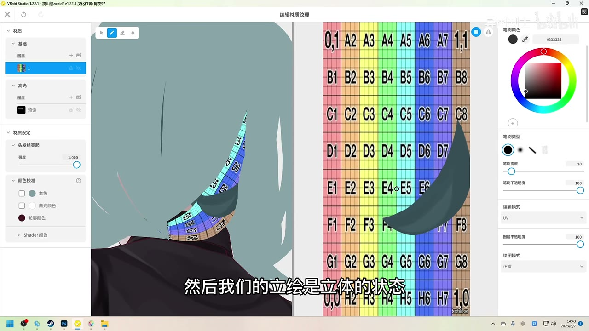
SAI 的标题栏停在 VRoid Studio\LinkTexture，文件是 1.png。字幕说放到刚刚的那个贴图文件里，再点下保存，模型才会换成刚画的这张。立绘上的后发是弯的、有厚度，按原样放进色块，存回去就是一块深色月牙，盖住这束头发的一段，并没有顺着发束拉长。这一帧字幕是「然后我们的立绘是立体的状态」，上一句是「像之前说的那样」。再往后字幕说给扭转成平铺的状态。铺开之后，画布只留这一束用到的几列，右边整面色块不再全开着。
用扭曲拆成一段，对不上的先别涂死
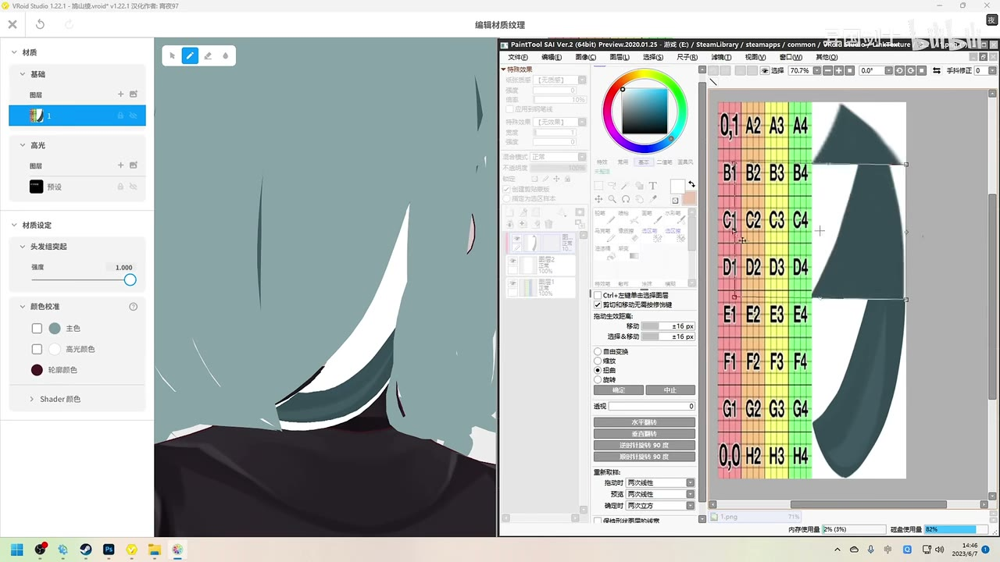
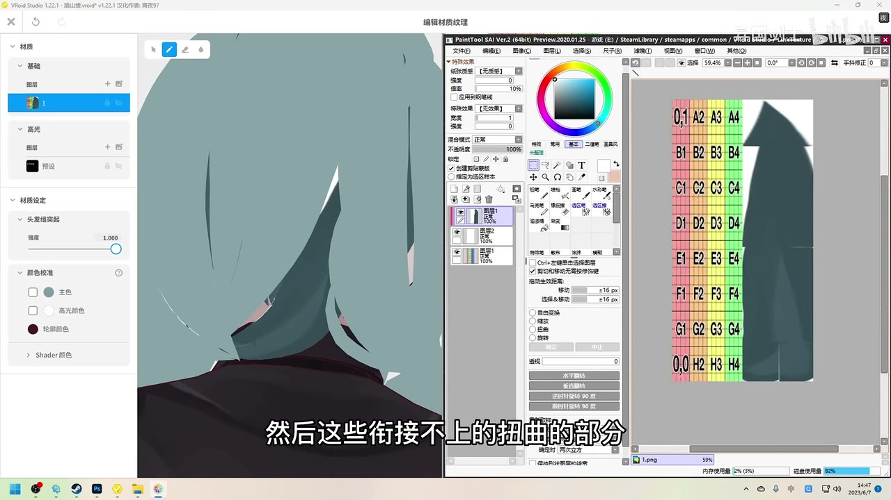
字幕先说点创建剪贴蒙版，图层里是图层1和图层2。然后选扭曲，把月牙拆开，一段一段按到色块的行上。格子是直的，发丝是弯的，扭完会有对不上的口。模型上那些白边就是贴图没盖住的地方，不是又长出一缕头发。字幕说把它分成一段一段的状态，指的就是这个。
白框先留着，缝隙再拖过去盖住
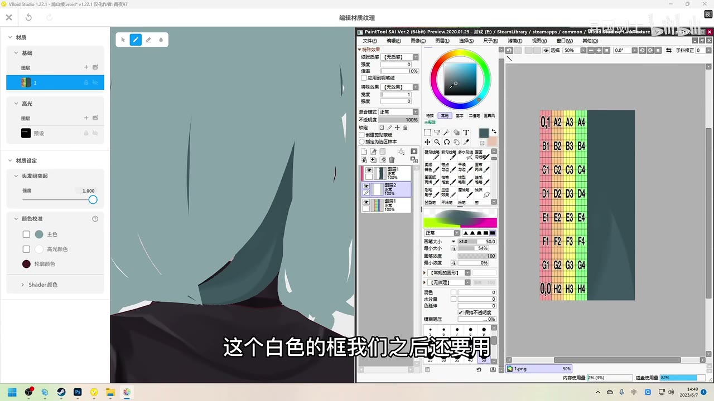
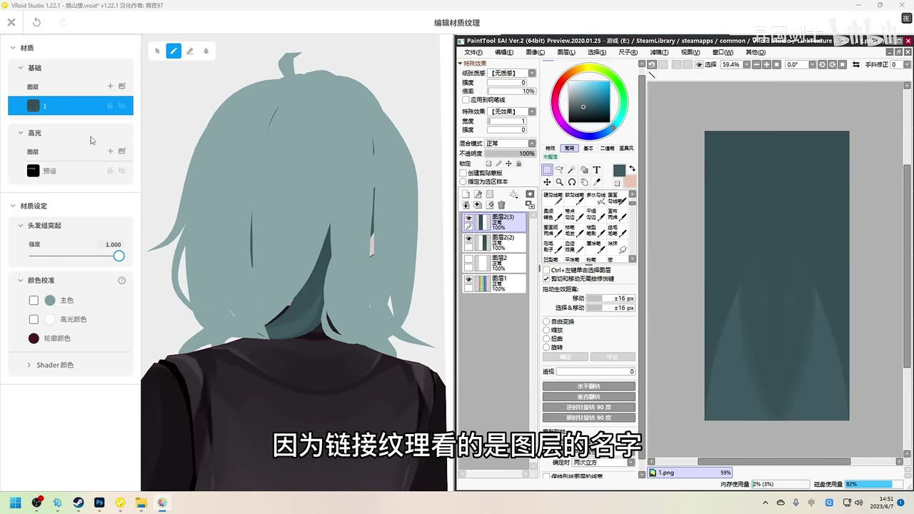
口播说这个白色的框之后还要用，所以不要在这一步把边上的白整块涂没。衔接处的缝，字幕说拖动盖住。几秒前字幕是「然后把这个往下合并」，再一句是「这样子就可以了」。铺平之后后脑是一整片灰绿，不再是月牙。图层名字要留着：字幕说链接纹理看的是图层的名字。VRoid 里这一层叫 1，SAI 里存的就是 1.png，改了别的名字，链回去的就不是这一张。
下一组复制后发2，再水平翻转
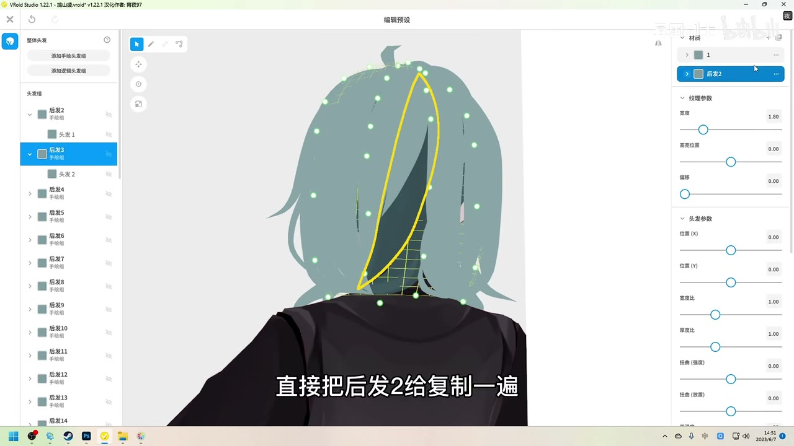
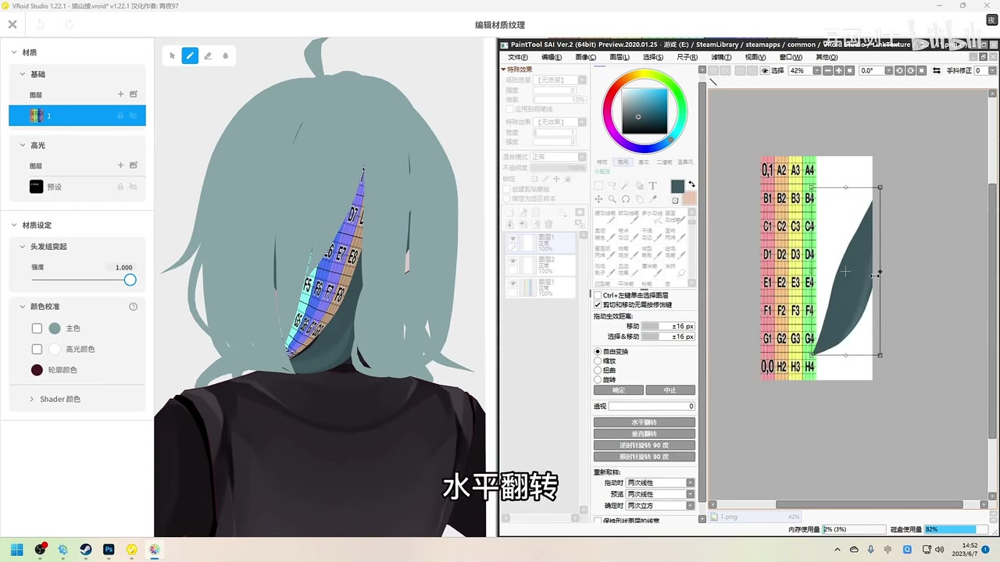
后发3 不从头画。字幕说直接把后发2 复制一遍。SAI 不用关，字幕说这个界面可以不用关掉，棋盘格还留在 1.png 里，用来对下一束。另一侧的格子跑到蓝紫那几列，字幕说水平翻转，把发丝翻到这一侧再铺。再往后，重命名材质的名字框里写着后发4，左边选中的组也是后发4，还是同一个对话框：名字、是、返回。
扭曲之前先复制一层备用
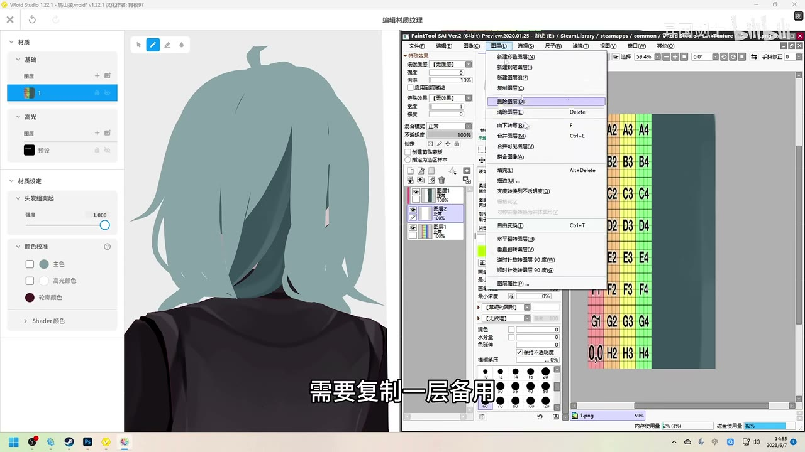
下一束也用扭曲。字幕说这个扭曲是有技巧的，先大致摆成发束的弯，模型上会先出现一条深色的缕，边上仍有白。摆之前字幕说需要复制一层备用。菜单开着，要用的是复制图层，不是把删除图层点下去。自由变换的快捷键写着 Ctrl+T，合并图层写着 Ctrl+E。备份留着，扭坏了还能回到没拆开的那一层。
剩下的头发按同一套倍速铺完
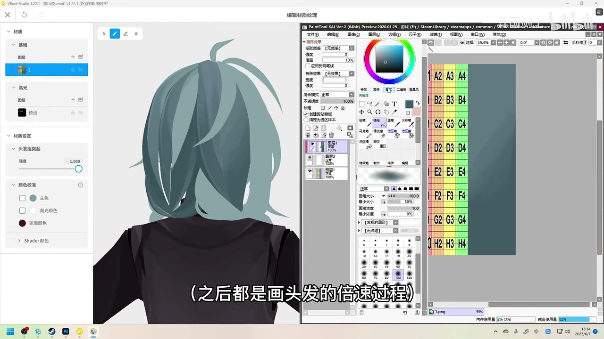
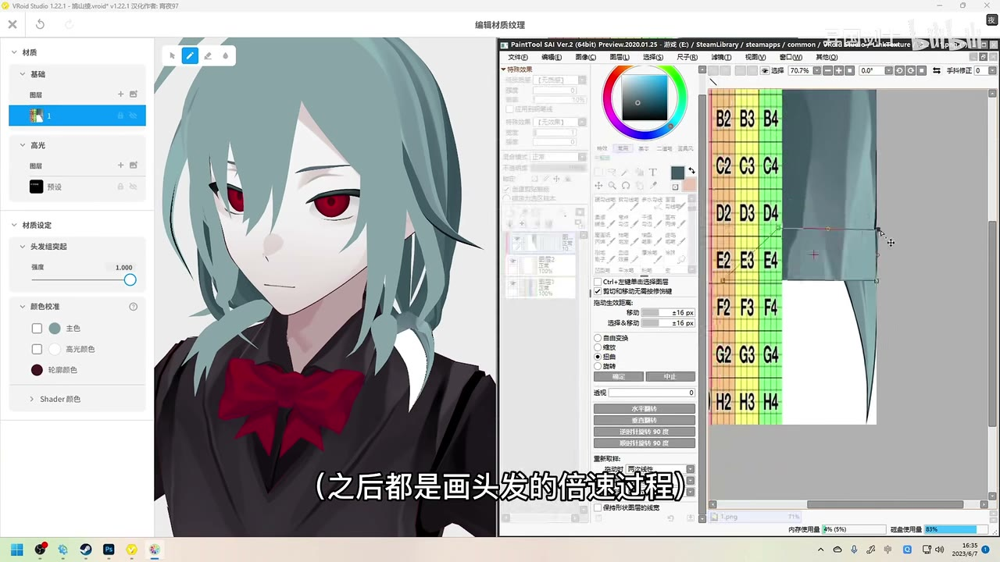
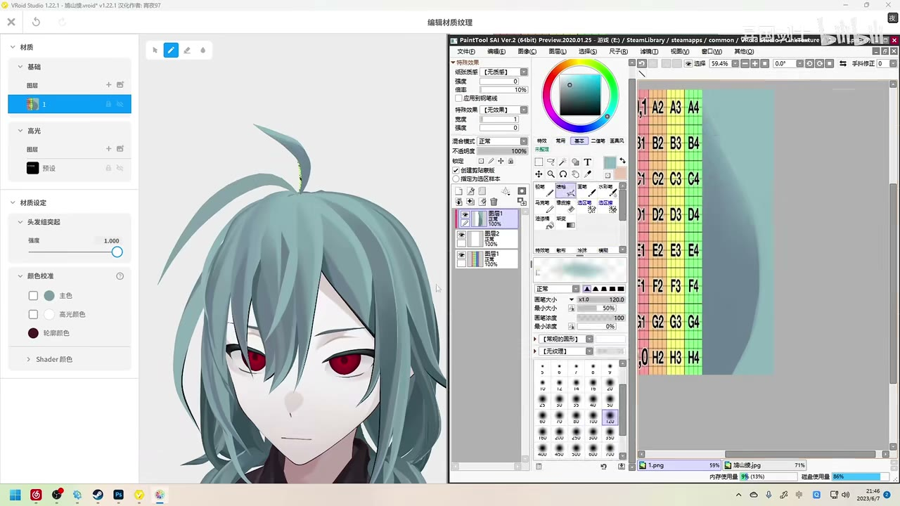
这一段里反复出现的字幕是「之后都是画头发的倍速过程」，没有再换一套菜单。后发、侧发、刘海和呆毛都走前面那一套：棋盘格对格子，立绘里的发丝放进 1.png，水平翻转，扭曲，缝隙拖住，保存后模型跟着变。侧脸上的白块是贴图还没盖住的地方，不是把材质删了。铺到结尾，刘海有了深浅，呆毛也立起来，衣服和五官这一集没有再改。颜色校准的主色、高亮颜色到最后一帧也没勾。